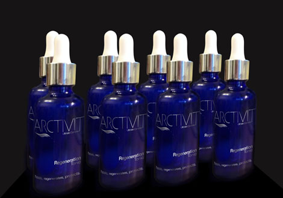
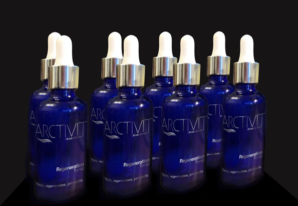
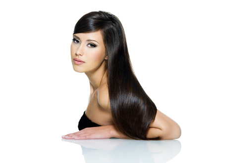
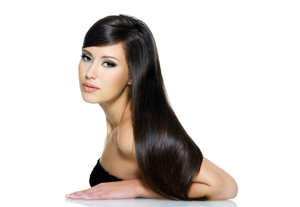
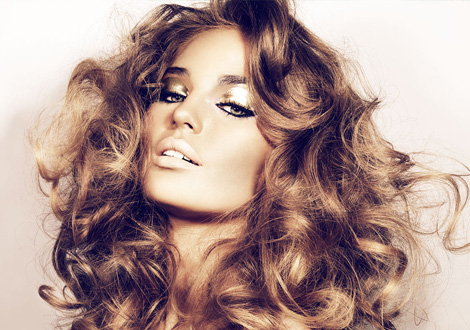
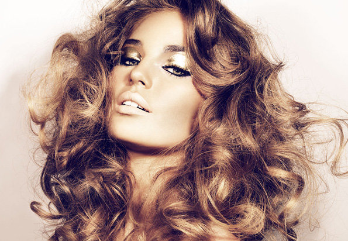
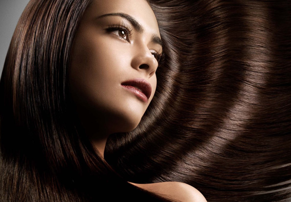
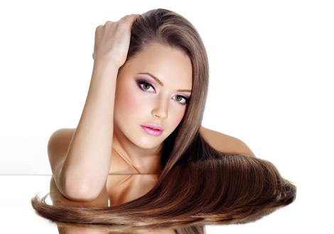
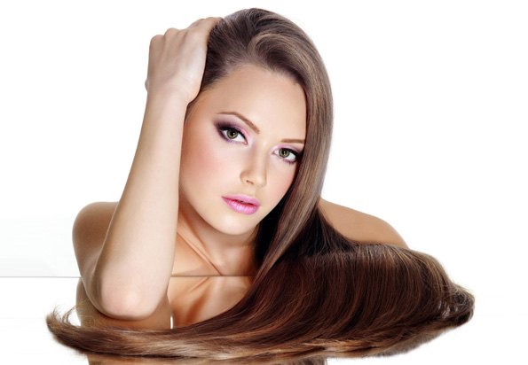

ARCTIVIT Regeneration |
Saçınızı foliküllerinden başlayarak ucuna kadar iyileştirirerek yeniler.
Tüm olumsuz etkenlere karşı korur.
ARCTIVIT Regeneration
ARCTIVIT Regeneration Serum Cildin PH değerini düzenler, nemlendirir ve gözenekleri temizleyip açar. Uygulandığı bölgede kan dolaşımını arttırır, saç köklerinizi güçlendirir. Saçınızı besleyerek kuvvetlendirir. Saçınızın çıkmasını hızlandırır, daha hızlı uzamalarını sağlar ve parlaklık kazandırır. Kepekten arındırır...
ARCTIVIT Regeneration Serum’un ÖZELLİKLERİ:
ARCTIVIT Regeneration Serum, kök saç deformasyonu, dökülmesi yaşayan kişilerin bu problemini önlemek
ve ölmemiş saç foliküllerini güçlendirerek yeniden çıkmalarını sağlamak amacıyla geliştirilen 10
yıllık özel bir formüdür. Nutritive yağlar, Dithymoquinone, Bioflavonoidler, Vitamin ve Mineraller
ile yoğunlaştırılmış Flavonoidlerin, süperoksit, alkoksil, peroksil ve nitrik oksit gibi radikalleri
temizleme, demir ve bakır şelasyonu, µ-tokoferol rejenerasyonu foksiyonlarına ek olarak; vazodilatatör,
immünstimülan, antiallerjik, östrojenik, antiviral etkileri de söz konusudur. Flavonoid aktiflerini
içeren Regeneration formulu sayesinde saç dökülmesine engel olur, düzenli kullanımda saç foliküllerinin
güçlenmesini sağlayarak saç oluşumunu destekler.
Yapılan vücud dışı klinik araştırmalar sonucunda ARCTIVIT Regeneration Serum kök saç deformasyonuna
karşı kullanıldığında hücresel yanıt alınmış ve köknodül oluşumuna yol açan Nod faktörler salgısını
tetiklediği görülmüştür. Topikal Nutritive formülasyon, fiziksel kararlılığı ve antioksidan aktivite
deneylerinde serbest radikalleri süpürme etkisi gözlemlenmiştir. Sonuçlar, serbest radikal ve reaktif
oksijen türünün yol açtığı hasara karşı cildi korumak için topikal formülasyonlarda da kullanılanabileceğini
göstermektedir.
ARCTIVIT Regeneration Serum’un yeni saç oluşumu için uygun ortamın hazırlanmasında özel etki gösterdiği kanıtlanmıştır.
ARCTIVIT Hairlife |
ARCTIVIT Hairlife Şampuan saç dökülmesi problemi yaşayan ya da saçlarını korumak isteyen erkekler ve kadınlar için formülü özel olarak geliştirilmiş bitkisel bir şampuandır.
Sağlıklı saçlar ARCTIVIT Hairlife
ARCTIVIT Hairlife Şampuan saç dökülmesi problemi yaşayan ya da saçlarını korumak isteyen erkekler ve kadınlar için formülü
özel olarak geliştirilmiş bitkisel bir şampuandır. Silicium,Niacinamide ve ARCTIVIT ultimate Complex formülünün birleşiminden
ortaya çıkan ARCTIVIT Hairlife Şampuan, saç dökülmesine engel olur, düzenli ve sürekli kullanımda foliküllerin güçlenmesini
sağlayarak saç oluşumunu destekler. Kuru/Normal saçlar ve yağlı saçlar için formlarına sahip ARCTIVIT Hairlife, 2si1 arada
formunda Panthenol katkısıyla, boyalı saçları UV ışınları gibi zararlı etmenlerin neden olduğu soldurucu etkiden korur.
Tarama kolaylığı, parlaklık ve hacim sağlarken, saçlarda meydana gelen statik elektiriği önler. düzenli ve sürekli kullanımda
foliküllerin güçlenmesini sağlayarak saç oluşumunu destekler.
▪ İnce kırılgan saçlarda belirgin iyileşme sağlar
▪ Saç dökülmesine karşı olumlu sonuçlar gösterir
▪ Tarama kolaylığı sağlar ve saça parlaklık kazandırır
▪ Tarama ve saça şekil verme işlemleri sırasında meydana gelen hasarı giderir.
▪ Saçlı deride tahriş azaltıcı etki gösterir
▪ Saç oluşumunu destekler
▪ Saça nemlilik ve parlaklık kazandırır
▪ Yıpranmış saçların görünümünün iyileşmesine yardımcı olur
Saç tellerini kalınlaştırır
Saç Bakımı |
Saç Bakımı İle İlgili Pratik Bilgiler
Saç dökülmesinin birçok nedeni vardır. Ortak problemlerde erkek ve kadınlarda farklılık yoktur. İnsanlarda ortalama 120.000-150.000 arasında saç teli vardır.
Araştırmalar günde 100-150 saç teli kadar kaybetme normal olduğunu göstermektedir. Anajen, katajen ve telojen: İnsan saçı doğal olarak bu üç aşamada büyür.
Anagen aktif veya büyüme aşamasıdır. Katagen saç kıllarında dökülme başlar. Doğal saç döngüsünün oldukça kısa bir aşamasıdır. Telojen dinlenme aşamasıdır.
Günlük dökülen saç kılları genellikle saç döngüsünün bu dinlenme veya geç fazıdır. Normal olarak kafa derisinde saç kıllarının yaklaşık % 10'u, herhangi bir
zamanda ya da dinlenme (telojen) aşamasında bulunmaktadır.
Genel olarak, çoğu saç dökülmesinde sistemik veya dahili hastalıklar ile kötü beslenme sık rastlanılan faktörler değildir. Sadece önceden belirlenmiş
genetik faktörler, aile öyküsü ve genel yaşlanma sürecinin bir sonucu olarak incelme ve saç kayıpları olabilir. Birçok erkek ve kadının saçlarında
otuzlu ve kırklı yaşlarında başlayan hafif ve genellikle normal fizyolojik incelme görülür. Diğer zamanlarda, geçici ciddi stres, beslenme değişiklikleri,
gebelikte olduğu gibi hormonal değişiklikler, ergenlik, menopoz ve dahil olmak üzere normal hayat varyasyonlar geri dönüşümlü saç kaybına neden olabilir.
Bu tür kayıpların neredeyse tamamında Arctivit Regeneration Serum kullanıldığında önemli pozitif sonuçlar alınmaktadır.
Özellikle, tiroid hastalığı ve demir eksikliği anemisi gibi birçok sağlık koşulları, saç kaybına neden olabilir. Sıradan saç dökülmesi olan kişiler
tiroid kan testleri ve tam kan sayımı (CBC) dahil olmak üzere diğer laboratuar testleri yaptırmaları ani ya da şiddetli saç dökülmesi nedenlerini
dışlamak için önemlidir. Dermatologlar deri, saç ve tırnakların sorunlarında uzmandırlar. Saç incelmesi ve dökülmesi gibi sorunlarınıza daha gelişmiş
tanı sağlayabilirler.
Saç folikülü saç gövdesinin alt kısmını kaplayan yapıdır. Her folikül yeni saç büyümesini besleyen kan damarlarını içerir. Tüm saç folikülleri doğumdan
itibaren ömür boyunca kafa derisi sağlıklı olması durumunda büyüyüp dökülen ve bu süreci tekrarlayan bir döngü içindedir.
Tek bir yeni saç büyüme fazı 2-3 yıldır. Bu süre sonunda, büyüme durur ve folikül dinlenme fazına girer.Dinlenme fazından 3-4 ay sonra, saç dökülür ve
saç dersindeki ortamın uygun olması durumunda bir sonraki büyüme döngüsü başlar. Normal bir kafa derisi üzerinde, köklerinin yaklaşık yüzde 80-90'ı
bir anda büyüyor . Aynı sayıda yeni bir büyüme evresine girerken , her gün yaklaşık 75-100 folikül ise döker. Arctivit Regeneration Serum'u kullanmanız
durumunda, kafa derinizde saç çıkması için yeniden sağlıklı ortam oluştururken, aynı süreçte varolan sorunları çözer, saçlarınızı güçlendirip dökülmelerini
engeller.
Arctivit Regeneration Serum'un etkili olup olmadığını belirlemek için en az iki ay boyunca kullanılmalıdır. Etkili olduğunda, genellikle tedavinin
başlamasından sonra üç dört hafta içinde saç dökülmesi normal seviyeye geriler. 2-4 ay içinde saç büyümeye başlar. Arctivit Regeneration Serum etkileri
genellikle 3 ila 8 ay sürekli kullanım sonunda stabilizedir. Arctivit Regeneration Serum uygulaması süresiz devam edebilir. Saçlarınızın her zaman
güçlü ve parlak, kafa derinizin sağlıklı olmasını sağlar..
Herkes Arctivit Regeneration Serum'dan yararlanamaz. Kellik en az beş yıl çncesinde oluşmuş ancak sadece taç (üst) etkilediği zaman, ve saç dökülmesi
alanı çapı 10 cm civarında olduğunda iyi sonuçlar görülebilir. Çalışmalar göstermiştir ki ile taç saç dökülmesinde Arctivit Regeneration Serum
kullanıldığında erkek ve kadınların 30 ila 40 oranında önemli sonuçlar almaktadır.
ARCTIVIT Regeneration Serum uygulayıp beklettiğiniz saçlarınızı ARCTIVIT Hairlife Şampuan ile yıkayınız.
Islak saçlarınız taramak için muhakkak iri dişli bir tarak kullanın. Uçlardan başlayarak yukarı saç gövdesine doğru tarayın.
- Kuru ve hasar görmüş saçlar ıslakken daha da kırılgandır bu nedenle yıkarken saçınızı şiddetli bir şekilde ovalamayın.
- Saçı kurutmak için havluyla sarın ve fazla suyu yavaşça sıkın.
- Islak saçı asla fırçalamayın dolaşmış saçları düzeltmek için muhakkak iri dişli tarak kullanın.
- Saçı ültraviyole ışınlarından koruyun. - Kuru iken saçın iyice fırçalanması yağ bezelerini uyarılmasına yardımcı olur ve kuruluk giderilir.
- Yıkamadan önce saçın fırçalanması kepeği gevşetir. - Şampuanla yıkadığınız da saçınızı iyice durulayın.
- Fırça ve taraklı haftada bir kez ılık su ve hafif şampuan içeren bir karışıma daldırarak temizleyin.
Yarım saat sonra suyla iyice durulayın ve kurumaya bırakın. - Saçınız uçlarda değil yalnız köklerde yağlı ise saç kreminizi yalnız uçlara uygulayın.
- Saçı durulamak için yalnız ılık su kullanın. Çok sıcak su kafa derisini uyarılarak daha fazla yağ üretimine yol açabilir.
- Aşırı fırçalama kafa derisine harekete geçirerek yağ üretimini teşvik edeceği için saçı aşırı fırçalamaktan kaçının.
Uyandığınızda parmaklarınız yardımıyla saçınızdaki karışıklıkları ve varsa düğümleri saçı zorlamadan açın. Öne eğilin ve saçınızın
öne doğru dökülmesini sağlayın.
Kullandığınız fırçaların mutlaka tahtadan, doğal ve yumuşak bir fırça olmasına özen gösterin. Fırça yardımıyla saçı önce üstten,
kökten uca doğru, fırçalayarak saçınızı havalandırın; sonra da iç taraftan fırçalayın. Daha sonra doğrularak aynı işlemi tekrarlayın.
Fırçaladığınız tutamlardan elinizi geçirerek statik elektriği alın. Beş kere ile başlayarak ve rahat bir rutine oturtuncaya kadar
her hafta saçınızı taradığınız fırça darbesi adedini artırın.
Saçınız fırçalanma miktarı arttıkça yağlanmaya başlarsa fırçalama sayısını azaltın. Saçınızı sadece kuruyken fırçalayın.
Saçın en zayıf olduğu zaman ıslak olduğu zamandır. Bu nedenle ıslakken fırçalamak saça zarar verebilir. Mümkünse saç kuruyken
bile fırçalamadan önce tarayın.
Doğru tarama
Saçı küçük tutamlara ayırın. Geniş dişli tarak kullanarak ve saçı açmaya aşağıdan başlayarak tarayın. Saçı daima aşağıya doğru tarayın. Mutlaka tahta veya şimşir tarak kullanın. Plastik ve benzeri sentetik maddelerden yapılmış tarakları kullanmayın. Saçı asla çekiştirmeyin ve zorlamayın. Açmakta zorlandığınız tutamların üstünden elinizle tutarak saç kökünün çekilmemesine dikkat edin.
ARCTIVIT Regeneration Serum
içeriğindeki bitkisel kaynaklı Bioflavanoidler, doymamış yağ asitleri, Dithymoquinone, Vitamin- mineraller ve çinko sayesinde saç dökülmesine karşı etkili olur.
Multimedya |
Ürünlerimiz ile ilgili fotoğraf ve videolar
-

-

-

-
-

-
-

%100 doğal
Saç dökülmesine son. Daha gür daha güçlü saçlar. saç derisini nemlendirerek kan dolaşımını arttırır ve kökleri güçlendirir.
Saçları problemli olan büyük kitleden birisiyim ben de. Bugüne kadar kuaförlerden, eczanelerden bir çok farklı ürün aldım bu konuda hepside farklı derecelerde etkili ve kaliteli markalardı buna hiç bir diyeceğim yok. Fakat ürünler sadece o gün için iyiydi, yani kullanınca saçlarım harika gözüküyor ama bıraktıktan hemen sonra dökülmeye devam ediyor ve saçlarımı yerlerden topluyordum. Kuaförüm geçen yıl da bu üründen bahsediyordu, yurtdışından getirtebilsek falan diyordu, başka ürünler de önermişti ama bu, işte bu tamamdı. Neyse kullandım ve Ürün içeriğinde de herhangi bir kimyasal olmadığı için sanırım hiçbir yan etkisini görmedim. Derdiniz olunca hastalığınızın doktoru oluyorsunuz benim gibi işte. Memnun kaldım tavsiye diyorum arkadaşlar.
Enerjimi arttırdı, ciddi söylüyorum, kendimi o kadar enerjik, güvenli, rahatlamış hissediyorum ki sadece 2 hafta sonra karım sen saçına bişey mi yaptırıyorsun, beyazların gitmiş, farklılar sanki dedi. 2 kutu siparişimi verdim bugün...
Siparişten bir gün sonra elime geçmesi ilgililerin konusunda çok iyi olduklarını ve müşteri memnuniyetini önemsediklerini gösterir. Kendilerini tebrik ediyorum... Üründen de aynı şekilde çok memnun kaldım...
Ben 36 yaşındayım diğer saç ürünlerine harcadığım parayla kıyasladım bu ürünü. Gerçekten de Arctivit performans ve maddiyat açısından çok daha başarılı ve ekonomik bir ürün. Öncelikle kendinizi çok enerjik hissediyorsunuz. İnanılmaz kendinize güveniniz artıyor. Ben çok beğendim...
Harika ürün.. Saçlarım o kadar hızlı dökülüyordu ki, bir sonraki ay etkisi daha çok hissedilir oluyor. Önce şampuanını kullanmamıştım ama kullanınca çok daha iyi hissettim açıkcası ilginç bir şey.
Benim sorunum saçlarımın arasında oluşan küçük lezyonlar, stresten. Tarayamıyorum, kaşınıyor falan, bilirsiniz işte. Arctivit’i İsviçre’deki kuzenim getirmişti ilk, sadece bir şişe kullandım. Bildiğim kadarıyla bu tarz ürünler yaralara iyi gelmiyor ama bu %100 doğal olduğu için kepek, yara, hatta iyice seyrelen saçlarımı bile kendine geldi. Şimdi buradaymış hemen sipariş verdim, şampuanıyla birlikte.
Organik saç ürünler konusunda takıntılıyım, dünyanın çeşitli yerlerinden Saf yağlar getirtiyordum, denemediğim yağ kalmamıştı. Arctivitin içiriği bulup bir araya getirmek amatörlerin işi değilmiş. Ama teşekkürler gerçekten de kaliteli bir ürünmüş. Saçlarımı uzatamıyorum, fönletemiyorum korkusu yaşamaya gerek yok bence, saçlarım hem canlı hem parlak, gayet ideal, Doğru demişler, regeneration...
İlk başta şüpheyle yaklaşmış olsam da, Arctivit kullanmayı kabul ettim. Vay canına kısa sürede sağladığı enerjiye, saçlarımdaki canlılığa çok şaşırmıştım. Eşim de sağladığı etkilerden çok memnun kaldı. Memnuniyetimizi yakın arkadaşlarımızla paylaşacağız...
23 yaşındayım, Saçlarımı 3-4 yıldır boyatıp renk değiştiriordum. Saç dökülmelerim önlenemez durumdayken Arctivit ile tanıştım. Sonuç inanılmaz, 2 aydır kullanıyorum ve daha şimdiden dökülme durduğu gibi saçlarım canlanıyor, küçük saçlarım aralardan geliyor. Benim gibi boya kaynaklı sorunu olanlara tavsiye ederim...
Kullanıcılar |
Ürünlerimizi kullanan ve memnun kalan müşterilerimiz
İLETİŞİM |
İnternet sayfamızı ziyaret ettiğiniz için teşekkür ederiz. Ürünlerimiz veya hizmetlerimizle ilgili yardıma ihtiyacınız varsa, lütfen bizimle temasa geçin..
-
Nispetiye cad. İhsan Aksoy sok. No:5/4
Etiler / İSTANBUL - +90 (212) 257 20 75
- bilgi@arctivit.com